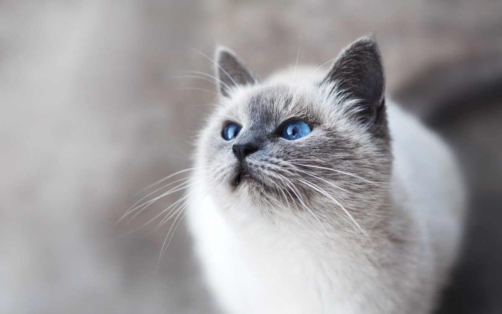

랙돌 키우기 완벽 가이드 — 성격·수명·질병·털 관리

"안으면 봉제인형처럼 늘어진다"는 이름 그대로, 랙돌은 고양이계의 순둥이로 불립니다. 사람을 잘 따르고 안기는 것을 좋아하는 대형묘예요. 온순한 성격만큼 장모 관리와 심장 유전병도 알아둬야 합니다. 성격부터 질병, 관리까지 정리했습니다.
한눈에 보는 랙돌
| 크기 | 대형묘 (체중 약 4.5~9kg) |
|---|---|
| 수명 | 약 12~17년 |
| 털 | 장모 (속털 적어 엉킴 덜함) |
| 성격 | 매우 온순, 사람 좋아함 |
| 활동량 | 낮음~중간 |
| 초보자 적합도 | 높음 |
성격과 기질
랙돌의 기질을 한마디로 하면 "소리 없이 따라다니는 고양이"입니다. 방을 옮기면 뒤따라와 같은 방 바닥에 자리를 잡는데, 무릎 위로 올라오기보다 발치나 옆자리에 붙어 앉는 쪽을 택하는 개체가 많습니다. 울음소리는 작고 높은 편이라 배가 고프거나 화장실이 더러워도 요구가 크게 드러나지 않아요. 조르지 않는 성격이라는 건 뒤집어 말하면 보호자가 먼저 확인해줘야 할 항목이 많다는 뜻이기도 합니다.
생활 반경은 대체로 낮습니다. 냉장고 위나 문틀처럼 높은 자리를 차지하려는 욕구가 약하고, 새벽에 집 안을 질주하는 이른바 '우다다'도 덜한 편이에요. 소리에 놀라 숨는 일이 적어 손님이 와도 자기 자리를 지키는 경우가 많고, 아이가 서툴게 만져도 발톱을 세우기보다 슬그머니 몸을 빼는 식으로 반응합니다. 다만 위험을 스스로 피하는 반응도 그만큼 둔해서, 완전 실내 사육을 기본으로 삼으세요.
성격이 자리 잡는 속도 역시 몸이 자라는 속도만큼 느립니다. 한 살 무렵의 장난기가 두세 살까지 이어지다 서서히 가라앉으니, 어린 시절이 유난히 활발하다고 해서 품종 설명과 다르다고 볼 필요는 없습니다. 개체 차는 털색이나 무늬보다 어릴 때 사람 손을 얼마나 겪었는지에서 훨씬 크게 갈립니다.
입양 전 현실 체크 (비용·공간·시간)
랙돌에서 초보자가 가장 많이 놓치는 부분은 "성격"이 아니라 몸집입니다. 수컷은 다 자라면 7kg을 넘기도 해서, 일반 고양이 기준으로 산 용품이 전부 작아집니다.
월 유지비 감각
| 항목 | 대략적인 월 비용 | 메모 |
|---|---|---|
| 사료 | 4~7만 원 | 체중이 크니 급여량도 일반 묘의 1.3~1.5배 |
| 모래 | 2~4만 원 | 배설량이 많아 소모가 빠름 |
| 간식·영양제 | 1~3만 원 | 헤어볼 관리 제품 포함 |
| 병원(연 비용 분할) | 2~4만 원 | 연 1회 검진 기준, 질병 발생 시 별도 |
합치면 큰 문제가 없는 달에도 월 9~18만 원 정도를 생각해두면 무리가 없습니다. 여기에 심장 검진(심초음파)을 받는 해에는 회당 10~25만 원이 추가로 듭니다. 병원비 차이가 큰 편이니 근처 병원 두세 곳의 비용을 미리 물어보는 편이 좋습니다.
용품은 "대형" 규격으로
- 화장실 — 몸길이(코끝~꼬리 시작)의 1.5배가 기준이라 가로 55cm 이상이 편합니다. 작은 화장실은 배변 실수의 흔한 원인이 됩니다.
- 이동장 — 소형 이동장에는 성묘가 들어가지 않습니다. 처음부터 큰 것을 사세요.
- 캣타워 — 높이보다 발판 넓이와 하중이 중요합니다. 좁은 발판은 체중을 못 버티고, 랙돌은 점프력도 좋은 편이 아닙니다.
하루에 드는 시간과 혼자 두기
빗질 5~10분, 놀이 15분씩 두 번, 화장실 정리까지 하면 하루 40분 안팎이 듭니다. 공간은 넓지 않아도 됩니다. 활동량 자체가 낮아 원룸에서도 창가 자리와 낮은 단만 있으면 잘 지내요.
주의해야 할 질병
- 비대성 심근병증(HCM) — 랙돌 계열의 대표 유전 질환. 분양 시 부모묘 검사 이력 확인과 정기 심장 검진(심초음파)이 중요합니다.
- 모구증(헤어볼) — 장모라 그루밍 시 털을 삼켜 헤어볼이 생길 수 있습니다. (고양이 구토·헤어볼 관리)
- 하부요로기 질환 — 고양이 공통. 습식 사료 비중을 늘려 수분 섭취를 확보하고, 모래 위 소변 덩어리가 갑자기 작아지거나 개수가 늘면 눈여겨보세요.
- 비만 — 골격이 커서 살이 붙어도 눈에 잘 안 띄는 것이 함정입니다. 관절 부담도 문제지만, 몸이 무거워지면 등과 엉덩이 쪽까지 혀가 닿지 않아 그 자리부터 털이 뭉치기 시작합니다.
나이대별 관리 포인트
새끼~성장기 (0~12개월)
랙돌은 3~4년에 걸쳐 천천히 완성되는 늦자라는 품종입니다. 1살에 다 컸다고 보고 성묘 사료로 일찍 바꾸면 성장에 필요한 열량이 모자랄 수 있으니, 사료 전환 시기는 체형을 보며 수의사와 정하는 편이 안전합니다.
이 시기의 진짜 과제는 습관 만들기입니다. 빗질, 발톱 깎기, 이동장 들어가기, 양치는 몸이 작을 때 익혀두지 않으면 나중에 7kg짜리를 힘으로 붙잡아야 합니다. 첫 몇 주 준비물은 새끼 고양이 첫 주 체크리스트에 정리해두었습니다.
성묘기 (1~7세)
중성화 이후 필요 열량이 눈에 띄게 줄어드는데도 급여량은 그대로인 경우가 많습니다. 가장 컨디션 좋을 때의 체중을 기록해두고 월 1회 재는 습관을 들이세요. "원래 큰 품종"이라는 생각 때문에 과체중을 늦게 알아차리는 일이 특히 흔합니다. 체형 판단이 헷갈리면 비만도 자가진단이 도움이 됩니다.
HCM은 어릴 때 정상이었어도 나이가 들며 나타날 수 있어, 한 번 검사하고 끝낼 문제가 아닙니다. 검진 주기는 부모묘 이력과 첫 검사 결과에 따라 달라지므로 담당 수의사와 상의해 정하세요.
노령기 (8세 이상)
- 자는 동안 호흡수 세기 — 잠든 상태에서 가슴이 오르내리는 횟수를 1분간 세어 보세요. 평소보다 뚜렷하게 빨라지거나 30회를 넘는 상태가 이어지면 심장·호흡기 문제일 수 있으니 진료가 필요합니다. 집에서 할 수 있는 가장 쉬운 관찰법입니다.
- 신장 수치 — 물을 많이 마시고 소변량이 늘었다면 확인해볼 신호입니다. (신부전 초기 증상)
- 관절 부담 — 체중이 있는 만큼 뛰어오르기를 먼저 포기합니다. 즐겨 쓰던 자리에 발판을 놓아 단차를 줄이고, 화장실도 턱이 낮은 것으로 바꿔주세요.
장모 빗질과 목욕 실전
랙돌의 털은 속털이 적은 세미롱헤어라 페르시안만큼 손이 가지는 않습니다. 대신 엉키는 자리가 거의 정해져 있어서, 그 부위만 알고 있으면 관리가 훨씬 수월해집니다.
엉킴이 잘 생기는 5곳
- 앞다리 겨드랑이 — 움직일 때 마찰이 가장 심한 곳
- 뒷다리 안쪽과 허벅지 — 본인이 그루밍하기 어려운 각도
- 목둘레의 긴 장식털(러프) — 밥 먹을 때 젖으면서 뭉칩니다
- 꼬리 밑동
- 엉덩이 뒤쪽 — 배변이 묻기도 해서 위생 문제로 이어집니다
도구와 주기
끝이 둥근 슬리커 브러시로 전체를 훑은 뒤, 빗살이 촘촘한 금속 콤으로 마무리하는 2단계가 기본입니다. 콤이 피부까지 걸림 없이 지나가면 그날은 통과예요. 평소 주 2~3회, 털갈이가 몰리는 봄·가을에는 매일 짧게 해주는 편이 결과가 좋습니다.
목욕
실내에서만 지낸다면 2~3개월에 한 번이면 충분합니다. 자주 씻길수록 좋은 것이 아니라 오히려 피부 유분이 빠집니다. 중요한 건 횟수보다 말리기예요. 겉만 마르고 속이 축축한 채로 두면 피부염으로 번지기 쉬우니, 겨드랑이와 뒷다리 안쪽까지 손으로 헤집어 확인하세요. 발바닥 사이와 항문 주변 털을 짧게 정리해두는 위생 미용도 장모종에서는 꽤 체감이 큽니다.
빗질은 헤어볼 예방과도 직결됩니다. 삼키는 털의 양 자체를 줄이는 것이 가장 확실한 방법이라, 토하는 횟수가 늘었다면 먼저 빗질 주기부터 점검해보세요.
초보자가 자주 하는 실수 4가지
- "순하니까 나중에 해도 되겠지" — 발톱 깎기와 빗질 훈련을 미루는 것이 1순위 실수입니다. 지금은 얌전히 있어줘도, 6kg을 넘긴 뒤 싫다고 버티기 시작하면 혼자서는 감당이 안 됩니다. 몸이 가벼울 때 발 만지기부터 시작하세요.
- 오래 안고 다니기 — 힘을 빼고 늘어지는 건 "좋아서"라기보다 타고난 반응에 가깝습니다. 불편해도 저항 신호를 잘 안 보내니, 귀가 옆으로 눕거나 꼬리 끝이 툭툭 움직이면 내려놓으세요. 아픈 곳이 있어도 티를 안 내는 편이라 정기 검진이 더 중요합니다.
- 높은 캣타워 사주기 — 다른 고양이용으로 나온 고층 타워는 랙돌에게 잘 맞지 않습니다. 몸이 무겁고 점프가 서툴러 착지 충격이 크고, 좁은 발판에서 떨어지기도 합니다. 낮고 넓은 단을 계단처럼 이어 붙이는 배치가 안전합니다.
- 베란다·현관 개방 — 경계심이 낮아 위험을 스스로 피하지 못합니다. 다른 고양이라면 도망칠 상황에서도 가만히 있는 경우가 있어, 방충망 고정과 현관 이중문 확인은 필수로 생각하세요.
사회화와 교감 훈련
랙돌은 겁이 적어 새로운 물건이나 소리를 비교적 담담하게 받아들입니다. 덕분에 간식으로 보상하는 훈련이 잘 통하는 편이에요. 이름 부르면 오기, 이동장에 스스로 들어가기, 발 내밀기 정도는 하루 3분씩 반복하면 대부분 익힙니다.
반면 반응이 느긋해서 보호자가 "관심이 없나?" 하고 오해하기 쉽습니다. 불러도 바로 뛰어오지 않을 뿐, 조금 뒤에 옆에 와서 앉는 식이라 기다려주면 됩니다. 억지로 자세를 잡거나 밀어붙이는 방식은 저항을 안 해서 통하는 것처럼 보여도 학습은 일어나지 않으니, 짧게 끝내고 잘했을 때 바로 보상하는 쪽이 훨씬 빠릅니다.
관리 포인트 (환경·놀이·식이)
활동량이 낮은 품종이라 놀이를 안 시키면 그대로 살로 갑니다. 격하게 뛰는 놀이보다 낚싯대를 바닥에 낮게 끌어주는 방식이 관절에 부담이 적고 반응도 좋아요. 한 번에 오래 하기보다 5~10분씩 나눠서 하루 두세 번이 현실적입니다.
물은 마시는 양이 적을 수 있으니 물그릇을 방마다 하나씩, 밥그릇과는 떨어뜨려 두세요. 사료 선택 기준은 고양이 사료 고르는 법에 정리해두었고, 실내에서만 지내더라도 예방접종은 빠뜨리면 안 됩니다.
이런 분께 잘 맞아요
- 안기고 교감하는 다정한 고양이를 원하는 분
- 아이나 다른 반려동물과 함께 사는 가정
- 장모 빗질과 대형묘 관리를 감당할 수 있는 분
자주 묻는 질문 (FAQ)
Q. 랙돌은 정말 순한가요?
네, 안으면 힘을 빼고 늘어질 만큼 온순합니다. 다만 그 무던함은 불편함을 참는 쪽으로도 작동하니, 싫어하는 신호를 일찍 알아채는 것이 관건입니다.
Q. 조심해야 할 질병이 있나요?
비대성 심근병증(HCM)이 대표적인 유전 질환입니다. 부모묘의 검사 이력을 확인하고, 심초음파는 한 번 받고 끝낼 검사가 아니니 성묘가 된 뒤에도 주기를 정해 이어가세요.
Q. 털 관리가 힘든가요?
장모지만 속털이 적어 페르시안보다는 수월합니다. 주 2~3회 이상 빗질로 헤어볼과 엉킴을 예방하면 됩니다.